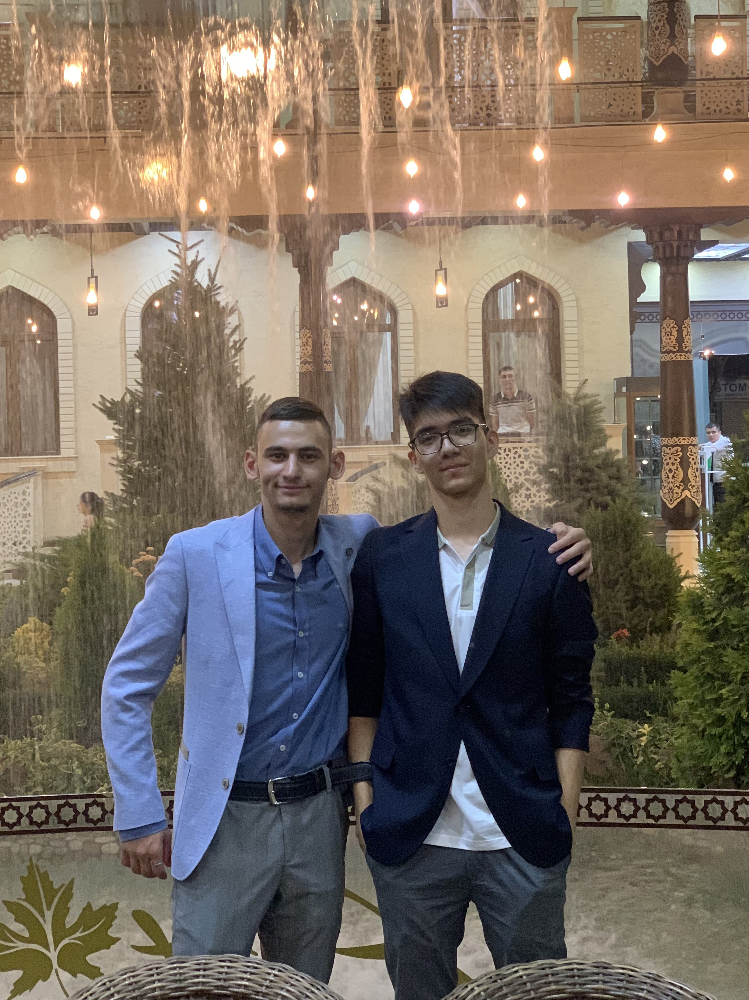
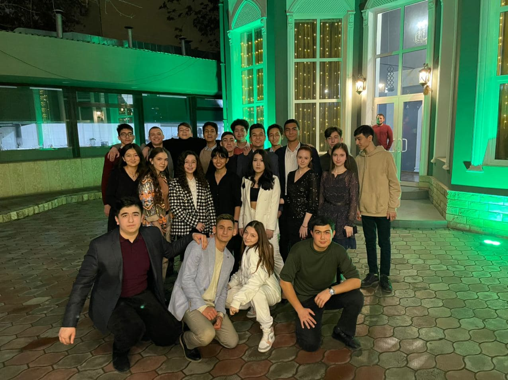

Джумабаев Отабек
GameWiki


О МОЕЙ ЖИЗНИ
БИОГРАФИЯ
Я - Джумабаев Отабек Шухратович, родился в городе Ташкент 25 мая 2003 года. Также как и большинсвто детей моего возраста меня отдали в детский сад в 3 года. Там, изучая основы арифметики, чтения и речи, я находился и до 7 лет. В 7 лет я пошел в школу. Первые четыре года для меня прошли незаметно, я обрел новых друзей, продвинулся в учебе и уже начали появлятся интересы к различным профессиям. Старшие классы были, пожалуй, самыми запоминающимися в период обучения. В эти годы я часто задерживался с друзьями после учебы чтобы поболтать, поиграть в футбол или пойти в компьютерный клуб. Ближе к 10-му классу я уже начал подготавливаться к поступлению в университет, в связи с чем проводил меньше времени с одноклассниками.

СТУДЕНЧЕСКИЕ ГОДЫ
Первый курс я провел в России, так как поступил в Казанский Федеральный Университет. Учеба там была сложной, но это не помешало мне спокойно сдать все экзамены 1-го и второго семестра. Летом, после 1-го учебного года, я прилетел обратно. На каникулах выяснилось, что мое здоровье сильно ухудшилось, в связи с чем мне пришлось перевестись на учебу в Узбекистан. В качестве нового учебного заведения я выбрал ТУИТ, где и прибываю по сей день.
| ФИО | Возраст | Зарплата | Место работы |
| Джумабаев Отабек Шухратович | 19 | 0$ | Студент |
| Иванов Иван Иванович | 25 | 500$ | IT-Park |
| Марков Марк Маркович | 30 | 2000$ | IT-Park |
ФОРМА ДЛЯ СВЯЗИ